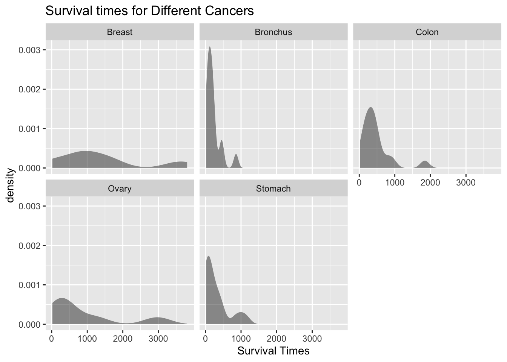

This chapter presents material on three more hypothesis tests. One is used to determine significant relationship between two qualitative variables, the second is used to determine if the sample data has a particular distribution, and the last is used to determine significant relationships between means of 3 or more samples.
11.1 Chi-Square Test for Independence
Remember, qualitative data is where you collect data on individuals that are categories or names. Then you would count how many of the individuals had particular qualities. An example is that there is a theory that there is a relationship between breastfeeding and autism. To determine if there is a relationship, researchers could collect the time period that a mother breastfed her child and if that child was diagnosed with autism. Then you would have a table containing this information. Now you want to know if each cell is independent of each other cell. Remember, independence says that one event does not affect another event. Here it means that having autism is independent of being breastfed. What you really want is to see if they are not independent. In other words, does one affect the other? If you were to do a hypothesis test, this is your alternative hypothesis and the null hypothesis is that they are independent. There is a hypothesis test for this and it is called the Chi-Square Test for Independence. Technically it should be called the Chi-Square Test for Dependence, but for historical reasons it is known as the test for independence. Just as with previous hypothesis tests, all the steps are the same except for the conditions and the test statistic.
11.1.1 Hypothesis Test for Chi-Square Test
State the null and alternative hypotheses and the level of significance
\(H_o:\) the two variables are independent (this means that the one variable is not affected by the other)
\(H_a:\) the two variables are dependent (this means that the one variable is affected by the other)
Also, state your \(\alpha\) level here.
State and check the conditions for the hypothesis test
State: A random sample is taken. Check: describe the process used to collect sample.
State: Expected frequencies for each cell are greater than or equal to 5, which means \(E\ge5\). Check: The expected frequencies, \(E\), will be calculated later.
3. Find the test statistic and p-value
Finding the test statistic involves several steps. First the data is collected and counted, and then it is organized into a table (in a table each entry is called a cell). These values are known as the observed frequencies, which the symbol for an observed frequency is \(O\). Each table is made up of rows and columns. Then each row is totaled to give a row total and each column is totaled to give a column total.
The null hypothesis is that the variables are independent. Using the multiplication rule for independent events you can calculate the probability of being one value of the first variable, \(A\), and one value of the second variable, \(B\) (the probability of a particular cell). Remember in a hypothesis test, you assume that is true, the two variables are assumed to be independent.
Now you want to find out how many individuals you expect to be in a certain cell. To find the expected frequencies, you just need to multiply the probability of that cell times the total number of individuals. Do not round the expected frequencies.
If the variables are independent the expected frequencies and the observed frequencies should be the same. The test statistic here will involve looking at the difference between the expected frequency and the observed frequency for each cell. Then you want to find the “total difference” of all of these differences. The larger the total, the smaller the chances that you could find that test statistic given that the condition of independence is true. That means that the condition of independence is not true. How do you find the test statistic? First find the differences between the observed and expected frequencies. Because some of these differences will be positive and some will be negative, you need to square these differences. These squares could be large just because the frequencies are large, you need to divide by the expected frequencies to scale them. Then finally add up all of these fractional values. This is the test statistic.
This is where you write reject \(H_o\) or fail to reject \(H_o\). The rule is: if the p-value \(<\alpha\), then reject \(H_o\). If the p-value\(\ge \alpha\), then fail to reject \(H_o\)
Interpretation
This is where you interpret in real world terms the conclusion to the test. The conclusion for a hypothesis test is that you either have enough evidence to support \(H_a\), or you do not have enough evidence to support \(H_a\).
11.1.1.1 Example: Hypothesis Test with Chi-Square Test
Is there a relationship between autism and breastfeeding? To determine if there is, a researcher asked mothers of autistic and non-autistic children to say what time period they breastfed their children. The data is in Autism Versus Breastfeeding (Schultz, Klonoff-Cohen, Wingard, Askhoomoff, Macera, Ji & Bacher, 2006). Do the data provide enough evidence to support that breastfeeding and autism are independent? Test at the 1% level.
11.1.1.1.1 Autism Versus Breastfeeding
Breast Feeding
Autism
Not Breast Feed
Breast Feed less than 2 months
Breast Feed 2 to 6 months
Breast Feed more than 6 months
yes
241
198
164
215
no
20
25
27
44
To put this data into r, use the following commands:
If you have the data frame instead of the summary table as in this example, you can use the tally command to create the table in r. Just save the tally command with a name.
11.1.1.2 Solution
State the null and alternative hypotheses and the level of significance
\(H_o\): Breastfeeding and autism are independent
\(H_a\): Breastfeeding and autism are dependent
State and check the conditions for the hypothesis test
State: A random sample of breastfeeding time frames and autism incidence was taken. Check: this was stated in the problem.
State: Expected frequencies for each cell are greater than or equal to 5, \(E\ge 5\). Check: See step 3. All expected frequencies are more than 5.
Find the test statistic and p-value On rStudio, the command is
chisq.test(autism_table) #calculates the test statistics and p-value
The test statistic is 11.217 and the p-value is 0.01061.
Conclusion
Fail to reject \(H_o\) since the p-value is more than 0.01.
Interpretation
There is not enough evidence to support that breastfeeding and autism are dependent. This means that you cannot say whether a child is breastfed or not will indicate if that the child will be diagnosed with autism.
11.1.2 Homework for Chi-Square Test for Independence Section
In each problem show all steps of the hypothesis test. If some of the conditions are not met, note that the results of the test may not be correct and then continue the process of the hypothesis test.
The number of people who survived the Titanic based on class and sex is in Table 11.1 (“Encyclopedia Titanica,” 2013). Is there enough evidence to show that the class and the sex of a person who survived the Titanic are independent? Test at the 5% level.
Table 11.1: Surviving the Titanic
female
male
first
134
59
second
94
25
third
80
58
Researchers watched groups of dolphins off the coast of Ireland in 1998 to determine what activities the dolphins partake in at certain times of the day (“Activities of dolphin,” 2013). The numbers in Table 11.2 represent the number of groups of dolphins that were partaking in an activity at certain times of days. Is there enough evidence to show that the activity and the time period are independent for dolphins? Test at the 1% level.
Is there a relationship between autism and what an infant is fed? To determine if there is, a researcher asked mothers of autistic and non-autistic children to say what they fed their infant. The data is in Table 11.3 (Schultz, Klonoff-Cohen, Wingard, Askhoomoff, Macera, Ji & Bacher, 2006). Do the data provide enough evidence to show that that what an infant is fed and autism are independent? Breast-feeding (BF), Formula with DHA/ARA (For with), and Formula without DHA/ARA (Form without)Test at the 1% level.
Students at multiple grade schools were asked what their personal goal (get good grades, be popular, be good at sports) was and how important good grades were to them (1 very important and 4 least important). The data is in Table 11.4 (“Popular kids datafile,” 2013). Do the data provide enough evidence to show that goal attainment and importance of grades are independent? Test at the 5% level.
Table 11.4: Personal Goal and Importance of Grades
1
2
3
4
Grades
70
66
55
56
Popular
14
33
45
49
Sports
10
24
33
23
Students at multiple grade schools were asked what their personal goal (get good grades, be popular, be good at sports) was and how important being good at sports were to them (1 very important and 4 least important). The data is in Table 11.5 (“Popular kids datafile,” 2013). Do the data provide enough evidence to show that goal attainment and importance of sports are independent? Test at the 5% level.
Table 11.5: Personal Goal and Importance of Sports
1
2
3
4
Grades
83
81
55
28
Popular
32
49
43
17
Sports
50
24
14
2
Students at multiple grade schools were asked what their personal goal (get good grades, be popular, be good at sports) was and how important having good looks were to them (1 very important and 4 least important). The data is in Table 11.6 (“Popular kids datafile,” 2013). Do the data provide enough evidence to show that goal attainment and importance of looks are independent? Test at the 5% level.
Students at multiple grade schools were asked what their personal goal (get good grades, be popular, be good at sports) was and how important having money were to them (1 very important and 4 least important). The data is in Table 11.7 (“Popular kids datafile,” 2013). Do the data provide enough evidence to show that goal attainment and importance of money are independent? Test at the 5% level.
In probability, you calculated probabilities using both experimental and theoretical methods. There are times when it is important to determine how well the experimental values match the theoretical values. An example of this is if you wish to verify if a die is fair. To determine if observed values fit the expected values, you want to see if the difference between observed values and expected values is large enough to say that the test statistic is unlikely to happen if you assume that the observed values fit the expected values. The test statistic in this case is also the chi-square. The process is the same as for the chi-square test for independence.
11.2.1 Hypothesis Test for Goodness of Fit Test
State the null and alternative hypotheses and the level of significance
\(H_o:\) The data are consistent with a specific distribution
\(H_a:\) The data are not consistent with a specific distribution
Also, state your \(\alpha\) level here.
State and check the conditions for the hypothesis test
State: A random sample is taken. Check: State how the sample is collected.
State: Expected frequencies for each cell are greater than or equal to 5. Check: The expected frequencies, *E*, will be calculated later.
Find the test statistic and p-value
Using rStudio see example 11.2.1
Conclusion
This is where you write reject \(H_o\) or fail to reject \(H_o\). The rule is: if the p-value \(<\alpha\), then reject \(H_o\). If the p-value \(\ge \alpha\), then fail to reject \(H_0\)
Interpretation
This is where you interpret in real world terms the conclusion to the test. The conclusion for a hypothesis test is that you either have enough evidence to support \(H_a\), or you do not have enough evidence to support \(H_a\).
11.2.2 Example: Goodness of Fit Test
Suppose you have a die that you are curious if it is fair or not. If it is fair then the proportion for each value should be the same. You need to find the observed frequencies and to accomplish this you roll the die 500 times and count how often each side comes up. The data is in table Table 11.8. Do the data show that the die is fair? Test at the 5% level.
Table 11.8: Observed Frequencies of Die for sides 1 through 6
Sides
observed….c.78..87..87..76..85..87.
1
78
2
87
3
87
4
76
5
85
6
87
11.2.2.1 Solution
State the null and alternative hypotheses and the level of significance
\(H_o:\) The observed frequencies are consistent with the distribution for fair die (the die is fair)
\(H_a:\) The observed frequencies are not consistent with the distribution for fair die (the die is not fair)
\(\alpha=0.05\)
State and check the conditions for the hypothesis test
State: A random sample is taken. check: This is true since each throw of a die is a random event.
State: Expected frequencies for each cell are greater than or equal to 5. Check: See step 3.
Test Statistic: The test statistic is 1.504. The p-value is 0.9126.
Conclusion
Fail to reject \(H_o\) since the p-value is greater than 0.05.
Interpretation
There is not enough evidence to support that the die is not consistent with the distribution for a fair die. There is not enough evidence to support that the die is not fair.
11.2.3 Homework for Chi-Square Goodness of Fit Section
In each problem show all steps of the hypothesis test. If some of the conditions are not met, note that the results of the test may not be correct and then continue the process of the hypothesis test.
According to the M&M candy company, the expected proportion can be found in Table 11.9. In addition, the table contains the number of M&M’s of each color that were found in a case of candy (Madison, 2013). At the 5% level, do the observed frequencies support the claim of M&M?
Eyeglassomatic manufactures eyeglasses for different retailers. The data frame is in Table 2.4. They test to see how many defective lenses they made the time period of January 1 to March 31. Table 11.10 gives the defect and the number of defects.
Do the data support the notion that each defect type occurs in the same proportion? Test at the 5% level.
On occasion, medical studies need to model the proportion of the population that has a disease and compare that to observed frequencies of the disease actually occurring. Suppose the end-stage renal failure in south-west Wales was collected for different age groups. Do the data in Table 11.11 show that the observed frequencies are in agreement with proportion of people in each age group (Boyle, Flowerdew & Williams, 1997)? Test at the 1% level.
In Africa in 2011, the number of deaths of a female from cardiovascular disease for different age groups are in Table 11.12 (“Global health observatory,” 2013). In addition, the proportion of deaths of females from all causes for the same age groups are also in table Deaths of Females for Different Age Groups. Do the data show that the death from cardiovascular disease are in the same proportion as all deaths for the different age groups? Test at the 5% level.
Table 11.12: Deaths of Females for Different Age Groups
Age
Observed
Expected
5-14
8
0.100
14-29
16
0.120
30-49
56
0.226
50-69
433
0.520
In Australia in 1995, there was a question of whether indigenous people are more likely to die in prison than non-indigenous people. To figure out, the data in Table 11.13 was collected. (“Aboriginal deaths in,” 2013). Do the data show that indigenous people die in the same proportion as non-indigenous people? Test at the 1% level.
A project conducted by the Australian Federal Office of Road Safety asked people many questions about their cars. One question was the reason that a person chooses a given car, and that data is in Table 11.14 (“Car preferences,” 2013).
Do the data show that the frequencies observed substantiate the claim that the reasons for choosing a car are equally likely? Test at the 5% level.
11.3 Analysis of Variance (ANOVA)
There are times where you want to compare three or more population means. One idea is to just test different combinations of two means. The problem with that is that your chance for a type I error increases. Instead you need a process for analyzing all of them at the same time. This process is known as analysis of variance (ANOVA). The test statistic for the ANOVA is fairly complicated, you will want to use technology to find the test statistic and p-value. The test statistic is distributed as an F-distribution, which is skewed right and depends on degrees of freedom. Since you will use technology to find these, the distribution and the test statistic will not be presented. Remember, all hypothesis tests are the same process. Note that to obtain a statistically significant result there need only be a difference between any two of the \(k\) means.
Before conducting the hypothesis test, it is helpful to look at the means and standard deviations for each data set. If the sample means with consideration of the sample standard deviations are different, it may mean that some of the population means are different. However, do realize that if they are different, it doesn’t provide enough evidence to show the population means are different. Calculating the sample statistics just gives you an idea that conducting the hypothesis test is a good idea.
11.3.1 Hypothesis test using ANOVA to compare \(k\) means
State the random variables and the parameters in words
State the null and alternative hypotheses and the level of significance
\(H_o:\) all the means are the same
\(H_a:\) at least two of the means are different
Also, state your \(\alpha\) level here.
State and check the conditions for the hypothesis test
a. State: A random sample of size is taken from each population. Check: discuss how the samples were taken.
State: All the samples are independent of each other. Check: Discuss how they are all independent.
State: Each population is normally distributed. Check: Create density plots and normal quantile plot of each sample. Note: the ANOVA test is fairly robust to the condition especially if the sample sizes are fairly close to each other. Unless the populations are really not normally distributed and the sample sizes are close to each other, then this is a loose condition.
State: The population variances are all equal. Check: See if the sample variances are close to each other. If the sample sizes are close to each other, then this is a loose condition.
4. Find the test statistic and p-value
The test statistic is \(F\). To find the test statistic, use technology such r Studio.
The test statistic, \(F\), is distributed as an F-distribution, where both degrees of freedom are needed in this distribution. The p-value is also calculated r Studio.
Conclusion
This is where you write reject \(H_O\) or fail to reject \(H_O\). The rule is: if the p-value \(<\alpha\), then reject \(H_o\). If the p-value \(\ge \alpha\), then fail to reject \(H_o\)
Interpretation
This is where you interpret in real world terms the conclusion to the test. The conclusion for a hypothesis test is that you either have enough evidence to support \(H_a\), or you do not have enough evidence to support \(H_a\).
If you do in fact reject \(H_o\), then you know that at least two of the means are different. The next question you might ask is which are different? You can look at the sample means, but realize that these only give a preliminary result. To actually determine which means are different, you need to conduct other tests. Some of these tests are the range test, multiple comparison tests, Duncan test, Student-Newman-Keuls test, Tukey test, Scheffé test, Dunnett test, least significant different test, and the Bonferroni test. There is no consensus on which test to use.
11.3.2 Example: Hypothesis Test Involving Several Means
Cancer is a terrible disease. Surviving may depend on the type of cancer the person has. To see if the mean survival time for several types of cancer are different, data was collected on the survival time in days of patients with one of these cancer in advanced stage. The data is in Table 11.15 (“Cancer survival story,” 2013). (Please realize that this data is from 1978. There have been many advances in cancer treatment, so do not use this data as an indication of survival rates from these cancers.) Do the data indicate that at least two of the mean survival time for these types of cancer are not all equal? Test at the 1% level.
Cancer <-read.csv( "https://krkozak.github.io/MAT160/cancer.csv") knitr::kable(head(Cancer))
Table 11.15: Survival Times in Days of Five Cancer Types
survival
organ
124
Stomach
42
Stomach
25
Stomach
45
Stomach
412
Stomach
51
Stomach
Code book for data frame Cancer
Description Survival time for several types of cancer was collected.
This data frame contains the following columns:
survival: survival times (months)
organ: the organ that the cancer is in
Source Cancer survival story. (2013, December 04). Retrieved from <http://lib.stat.cmu.edu/DASL/Stories/CancerSurvival.html>
References <http://lib.stat.cmu.edu/DASL>
11.3.2.1 Solution
State the random variables and the parameters in words
\(x_1:\) survival time of patient with Stomach cancer
\(x_2:\) survival time of patient with Bronchus (lung) cancer
\(x_3:\) survival time of patient with Colon cancer
\(x_4:\) survival time of patient with Ovarian cancer
\(x_5:\) survival time of patient with Breast cancer
\(\mu_1:\) mean survival time of patient with Stomach cancer
\(\mu_2:\) mean survival time of patient with Bronchus (lung) cancer
\(\mu_3:\) mean survival time of patient with Colon cancer
\(\mu_4:\) mean survival time of patient with Ovarian cancer
\(\mu_5:\) mean survival time of patient with Brest cancer
Now before conducting the hypothesis test, look at the means and standard deviations. There appears to be a difference between at least two of the means, but realize that the standard deviations are very different. The difference you see may not be significant.
Notice the sample sizes are not the same.
State the null and alternative hypotheses and the level of significance
\(H_o:\) all the means are equal
\(H_a:\) some of the means are different
\(\alpha=0.01\)
State and check the conditions for the hypothesis test
State: A random sample of 13 survival times from stomach cancer was taken. A random sample of 17 survival times from bronchus cancer was taken. A random sample of 17 survival times from colon cancer was taken. A random sample of 6 survival times from ovarian cancer was taken. A random sample of 11 survival times from breast cancer was taken.
Check: These statements may not be true. This information was not shared as to whether the samples were random or not but it may be safe to assume that.
State: The samples are all independent.
Check: Since the individuals have different cancers, then the samples are independent.
State: Population of all survival times from stomach cancer is normally distributed. Population of all survival times from bronchus cancer is normally distributed. Population of all survival times from colon cancer is normally distributed. Population of all survival times from ovarian cancer is normally distributed. Population of all survival times from breast cancer is normally distributed.
Check: Looking at the density plots and normal quantile plots for each sample, it appears that none of the populations are normally distributed. The sample sizes are somewhat different for the problem. This condition may not be true.
(ref:cancer-density–graphs-cap) Density Plot of Survival Times for Different Cancers
gf_density(~survival|organ, data=Cancer, title="Survival times for Different Cancers", xlab ="Survival Times")

Figure 11.1: Density Plot of Survival Times for Different Cancers
gf_qq(~survival|organ, data=Cancer, title="Survival times for Different Cancers")
Figure 11.2: Quantile Plot of Survival Times for Different Cancers
State: The population variances are all equal.
Check: The sample standard deviations are approximately 346.3, 209.9, 427.2, 1098.6, and 1239.0 respectively. This condition does not appear to be met, since the sample standard deviations are very different. The sample sizes are somewhat different for the problem. This condition may not be true.
4. Find the test statistic and p-value
To find the test statistic and p-value on r Studio, the commands would be:
Df Sum Sq Mean Sq F value Pr(>F)
organ 4 11535761 2883940 6.433 0.000229 ***
Residuals 59 26448144 448274
---
Signif. codes: 0 '***' 0.001 '**' 0.01 '*' 0.05 '.' 0.1 ' ' 1
The test statistic is F = 6.433 and the p-value = 0.000229.
Conclusion
Reject \(H_o:\) since the p-value is less than 0.01.
Interpretation
There is enough evidence to support that at least two of the mean survival times from different cancers are not equal.
df_stats(survival~organ, data=Cancer, mean)
response organ mean
1 survival Breast 1395.9091
2 survival Bronchus 211.5882
3 survival Colon 457.4118
4 survival Ovary 884.3333
5 survival Stomach 286.0000
By examination of the means, it appears that the mean survival time for breast cancer is different from the mean survival times for both stomach and bronchus cancers. It may also be different for the mean survival time for colon cancer. The others may not be different enough to actually say for sure.
11.3.3 Homework for Analysis of Variance (ANOVA) Section
In each problem show all steps of the hypothesis test. If some of the conditions are not met, note that the results of the test may not be correct and then continue the process of the hypothesis test.
Cuckoo birds are in the habit of laying their eggs in other birds’ nest. The other birds adopt and hatch the eggs. The lengths (in cm) of cuckoo birds’ eggs in the other species nests were measured and are in Table 11.16 (“Cuckoo eggs in,” 2013). Do the data show that the mean length of cuckoo bird’s eggs is not all the same when put into different nests? Test at the 5% level.
Table 11.16: Lengths of Cuckoo Bird Eggs in Different Species Nest
length
bird
19.65
Meadow
20.05
Meadow
20.65
Meadow
20.85
Meadow
21.65
Meadow
21.65
Meadow
Code book for data frame Eggs
Description Cuckoo birds are in the habit of laying their eggs in other birds’ nest. The other birds adopt and hatch the eggs. The lengths (in cm) of cuckoo birds’ eggs in the other species nests were measured
This data frame contains the following columns:
length: length of cuckoo bird’s eggs in other species nets (cm)
bird: bids where eggs were found in their nests. The birds are Meadow Pipit, Tree Pipit, Hedge Sparrow, Robin, Pied Wagtail, and Wren
Source Cuckoo eggs in nest of other birds. (2013, December 04). Retrieved from <http://lib.stat.cmu.edu/DASL/Stories/cuckoo.html>
References SOCR Home page: <http://www.socr.ucla.edu>
Levi-Strauss Co manufactures clothing. The quality control department measures weekly values of different suppliers for the percentage difference of waste between the layout on the computer and the actual waste when the clothing is made (called run-up). The data is in Table 11.17 (“Waste run up,” 2013). Do the data show that there is a difference between some of the suppliers? Test at the 1% level.
Levi <-read.csv( "https://krkozak.github.io/MAT160/Levi_jeans.csv") knitr::kable(head(Levi))
Table 11.17: Run-ups for Different Plants Making Levi Strauss Clothing
run_up
plant
1.2
Plant_1
10.1
Plant_1
-2.0
Plant_1
1.5
Plant_1
-3.0
Plant_1
-0.7
Plant_1
Code book for data frame Levi
Description Levi-Strauss Co manufactures clothing. The quality control department measures weekly values of different suppliers for the percentage difference of waste between the layout on the computer and the actual waste when the clothing is made (called run-up).
This data frame contains the following columns:
run_up: percentage difference of waste between the layout on the computer and the actual waste when the clothing is made. There are some negative values because sometimes the supplier is able to layout the pattern better than the computer
plant: Which suppliers
Source Waste run up. (2013, December 04). Retrieved from <http://lib.stat.cmu.edu/DASL/Stories/wasterunup.html>
References <http://lib.stat.cmu.edu/DASL>
Several magazines were grouped into three categories based on what level of education of their readers the magazines are geared towards: high, medium, or low level. Then random samples of the magazines were selected to determine the number of three-plus-syllable words were in the advertising copy, and the data is in Table 11.18 (“Magazine ads readability,” 2013). Is there enough evidence to show that the mean number of three-plus-syllable words in advertising copy is different for at least two of the education levels? Test at the 5% level.
Table 11.18: Number of Three Plus Syllable Words in Advertising Copy
number
education
34
High
21
High
37
High
31
High
10
High
24
High
Code book for data frame Advertising
Description Several magazines were grouped into three categories based on what level of education of their readers the magazines are geared towards: high, medium, or low level. Then random samples of the magazines were selected to determine the number of three-plus-syllable words were in the advertising copy
This data frame contains the following columns:
number: number of three=plus-syllable words in advertising copy
education: level of education the magazine is geared towards: high, medium, or low
Source Magazine ads readability. (2013, December 04). Retrieved from <http://lib.stat.cmu.edu/DASL/Datafiles/magadsdat.html>
References <http://lib.stat.cmu.edu/DASL>
A study was undertaken to see how accurate food labeling for calories on food that is considered reduced calorie. The group measured the amount of calories for each item of food and then found the percent difference between measured and labeled food. The group also looked at food that was nationally advertised, regionally distributed, or locally prepared. The data is in Table 11.19 (“Calories datafile,” 2013). Do the data indicate that at least two of the mean percent differences between the three groups are different? Test at the 5% level.
Table 11.19: Percent Differences Between Measured and Labeled Food
percent_diff
food
2
national
-28
national
-6
national
8
national
6
national
-1
national
Code book for data frame Food
Description A study was undertaken to see how accurate food labeling for calories on food that is considered reduced calorie. The group measured the amount of calories for each item of food and then found the percent difference between measured and labeled food. The group also looked at food that was nationally advertised, regionally distributed, or locally prepared.
This data frame contains the following columns:
percent_diff: percent difference between the number of calories that are measured in the food and the amount that is labeled on the food.
food: Where the food is created: nationally advertised, regionally distributed, or locally prepared.
Source Calories datafile. (2013, December 07). Retrieved from <http://lib.stat.cmu.edu/DASL/Datafiles/Calories.html>
References <http://lib.stat.cmu.edu/DASL>
The amount of sodium (in mg) in different types of hot dogs is in Table 11.19 (“Hot dogs story,” 2013). Is there sufficient evidence to show that the mean amount of sodium in the types of hot dogs are not all equal? Test at the 5% level.
Code book for data frame Food is below Table 11.19.